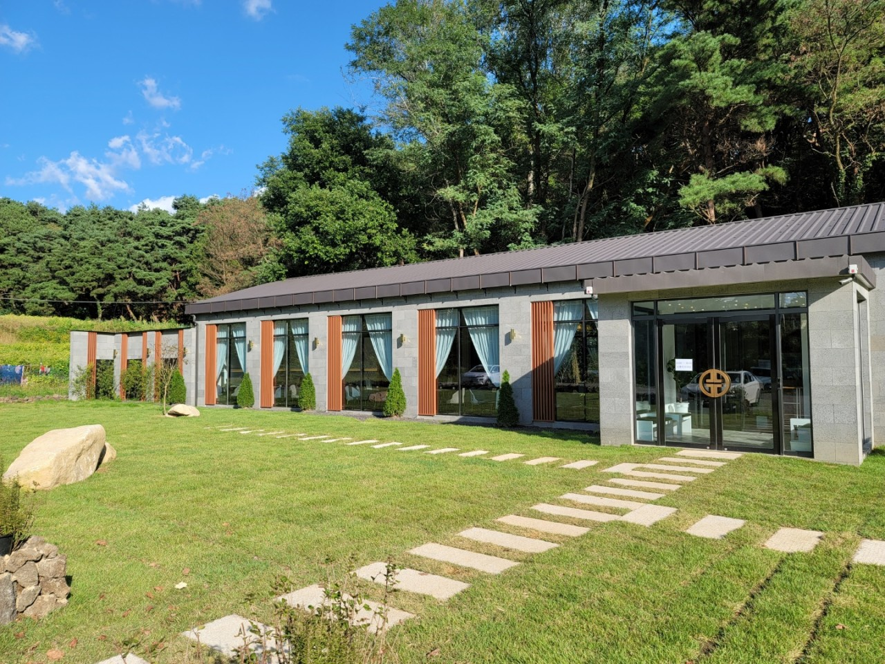

팔공산을 소개합니다.
팔공산이란?

대구광역시 동구, 경상북도 경산시, 영천시, 군위군, 칠곡군[2]에 걸쳐있는 해발 1,192m의 산. 흔히 팔공산이라고 하면 대부분 이 산을 말한다.
★팔공산의 사계절 (봄,여름,가을,겨울)★
1.봄

벚꽃의 계절 봄이네요...
2.여름

팔공산에 계곡있나요?...
3.가을

단풍잎 조아...
4.겨울

첫눈을 보다
★팔공산 맛집추천★
1.엄마밥상 (한식)


엄마밥상 자세한 정보보기!
2.우인정 팔공산 (소고기)


우인정 자세한 정보보기!
3.동인정 갈비찜 전문점(갈비찜)


동인정 갈비찜 자세한 정보보기!
★팔공산의 축제 및 할 것들★
1.가장 인기 있는 벚꽃축제

▶입장료 : 무료
▶문의 : 053-981-6624
▶장소 : 팔공산 동화지구 분수대 광장
▶주소 : 대구 동구 용수동 27-5
행사 일정
시민과 함께하는 참여 공연/퀴즈/노래방
장착무용 공연/피날레 앙코르 공연
2023.4.8(토) 개회식 12:30~
식전행사 10:00 ~ 12:30
퓨전 국악 예술단 '가람'공연,부대행사
팔공산 걷기 여행
자세한 내용은 홈페이지를 참고해주세요!
정보 보기
2.팔공산 케이블카 여행

▷팔공산에 갈 때 꼭 한번쯤은 가볼만 한 곳 인데요
▷높은 경지에서 좋은 경치를 보며, 자연을 만끽 할 수 있습니다.
▷운행시간은 다음과 같습니다 3 ~ 5월 행사 일정!!

▼▼▼▼후기를 보시고 싶다면 아래 클릭
정보 보기
★팔공산으로 오시는 길★
주소
경북 칠곡군 가산면 가산로 323 대표전화 054-971-1551
상세안내
가. 고속도로 이용시
1) 중앙고속도로
• 다부TG 300m ⟶ 다부방면 우회전 800m ⟶ 원형교차로에서 좌회전 400m ⟶ 삼거리에서 안동상주방면 좌회전 2.4km ⟶ 금화계곡방면 우회전 3.1km ⟶ 팔공산금화자연휴양림 (약 13분소요 총7km)
• 가산TG 400m ⟶ 대구방면으로 우회전 3km ⟶ 금화계곡방면 좌회전 3.1km ⟶ 팔공산금화자연휴양림 (약 12분소요 총6.5km)
2) 경부고속도로
• 구미TG 500m ⟶ 인동·산업단지 방면 우회전 5.6km ⟶ 인동광장, 대구·가산방면 우회전 10km ⟶ 송학교차로, 대구·가산방면 우회전 3.2km ⟶ 천평삼거리, 대구방면 우회전 2.6km ⟶ 금화계곡방면 우회전 3.1km ⟶ 팔공산금화자연휴양림 (약 40분소요 총25km)
• 왜관TG 400m ⟶ 김천·왜관방면 우회전 700m ⟶ 매원사거리, 우회전 15km ⟶ 원형교차로에서 좌회전 400m ⟶ 삼거리에서 안동·상주방면 좌회전 2.4km ⟶ 금화계곡방면 우회전 3.1km ⟶ 팔공산금화자연휴양림 (약 40분소요 총22km)
나. 열차 이용시
1) 대구역(동대구역), 왜관역 이용 도착 후 시내버스 이용
다. 시외버스 이용시
1) 서대구고속버스터미널 이용 도착 후 시내버스 이용
라. 시내버스 이용시
1) 노선번호 칠곡 300번
• 대구북부정류장 → 읍내동 → 동명면 → 금화리 하차 → 도보 및 택시 이용 (가산로 3.1km) → 팔공산금화자연휴양림
♣배차 시간
| 오실 때(대구북부 정류장 출발) |
돌아가실 떄(금화리 출발) |
| 08:20 |
07:15 |
| 11:30 |
10:25 |
| 16:30 |
13:45 |
| 19:10 |
18:05 |
2) 노선번호 칠곡 32번
• 왜관북부정류장 → 도개리 → 다부리 → 금화리 하차 → 도보 및 택시 이용 (가산로 3.1km) → 팔공산금화자연휴양림
• 배차시간
♣배차 시간
| 오실 때(왜관북부 정류장 출발) |
돌아가실 떄(금화리 출발) |
| 12:10 |
12:40 |
| 15:00 |
15:30 |
마. 주요도시별 소요시간
- 서울·인천 : 경부·영동고속도로 → 중부내륙고속도로 → 경부고속도로 → 구미IC → 팔공산금화자연휴양림 (약 3시간 40분소요 총270km)
- 대전 : 경부고속도로 → 구미IC → 팔공산금화자연휴양림 (약 2시간 10분소요 총140km)
- 광주 : 88올림픽고속도로 → 중앙고속도로 → 다부IC → 팔공산금화자연휴양림 (약 3시간 10분소요 총230km)
- 부산·울산 : 경부·대구부산고속도로 → 중앙고속도로 → 다부IC → 팔공산금화자연휴양림 (약 2시간 10분소요 총140km)
- 강릉 : 영동고속도로 → 중앙고속도로 → 가산IC → 팔공산금화자연휴양림 (약 3시간 40분소요 총310km)
팔공산에 오셔서 행복한 하루 되세요~